Provider API CLI Suite v18 图文教程增强版
Native、Compatible 与 Harness 一次讲透
这页专门回答：DeepSeek / Kimi / MiMo 到底是 Native 还是 Compatible？base_url 怎么判断？DeepSeek‑TUI 又在做什么？
1. 全局层级：Provider / Protocol / Adapter / Harness 不是同一层
最容易混淆的是把“厂商是谁”和“接口像谁”混成一件事。判断时要拆成四层：Provider 看域名归属，Protocol 看请求/响应格式，Adapter 看接入方式，Harness 看是否在做任务编排、工具执行、权限与证据。
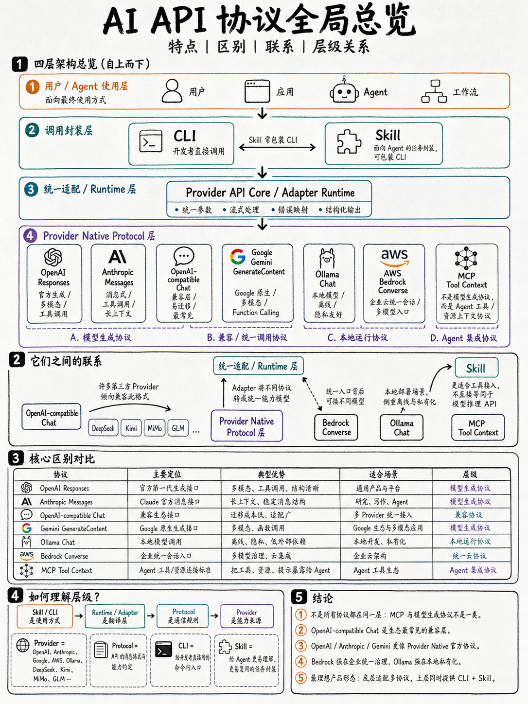
2. Provider Native Protocol 是什么？
Provider Native Protocol 是模型提供商自己定义的请求/响应/流式事件/工具调用语义。OpenAI Responses、Anthropic Messages、Gemini generateContent 都属于更典型的原生协议形态。
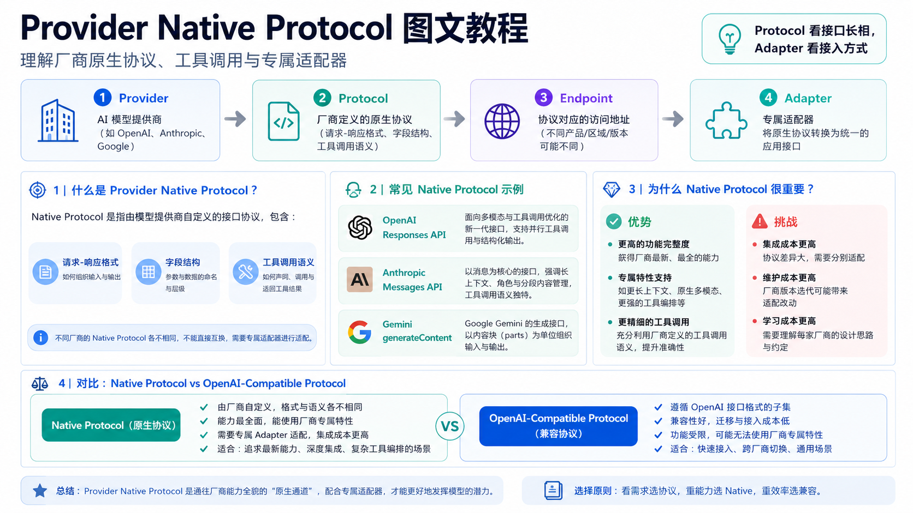
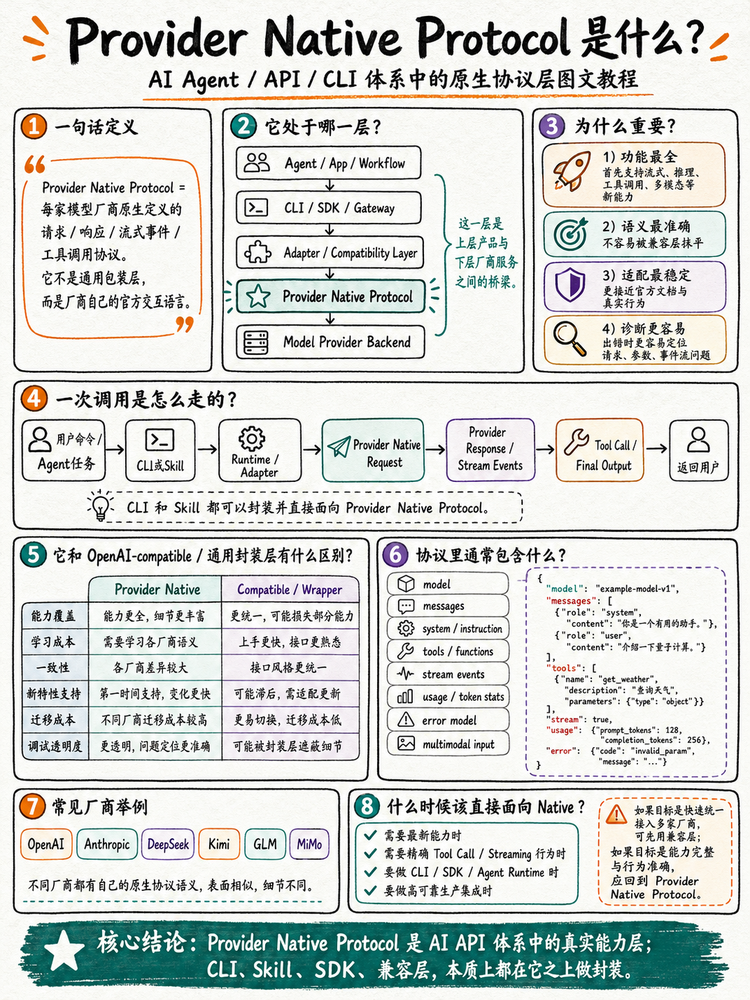
3. Native Provider 与 Compatible Provider 不是模型强弱之分
Native 更像“专用插头”，框架为厂商做了专属适配；Compatible 更像“转接头”，通过 OpenAI-compatible 或 Anthropic-compatible 接口快速接入。两者解决的是接入方式，不是模型能力高低。
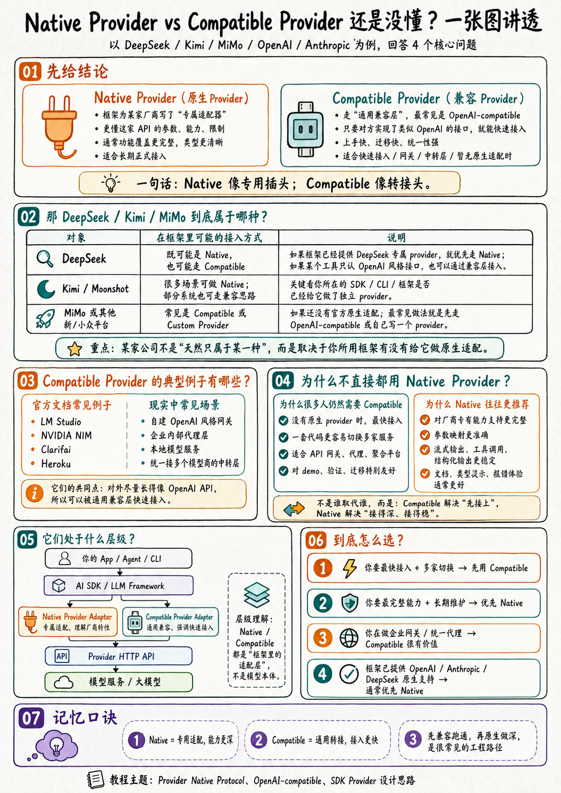
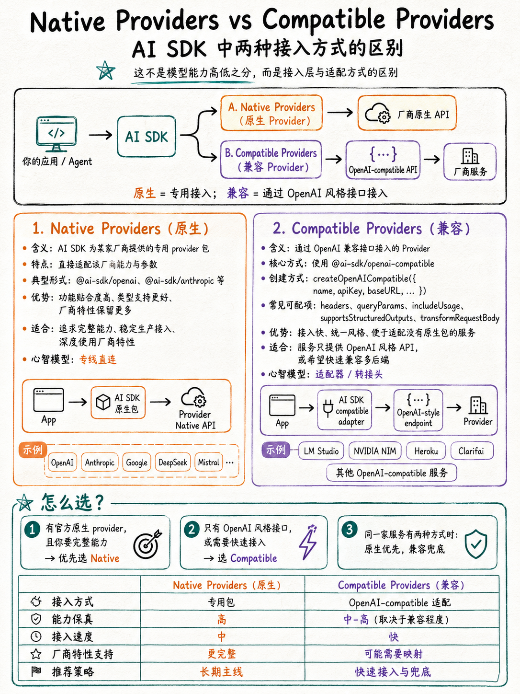
4. Base URL 怎么判断？先看 Protocol，再看 Adapter
一个 base_url 不能只看域名。非 OpenAI 域名下的 /v1/chat/completions 通常是 OpenAI-compatible；非 Anthropic 域名下的 /anthropic/v1/messages 通常是 Anthropic-compatible。
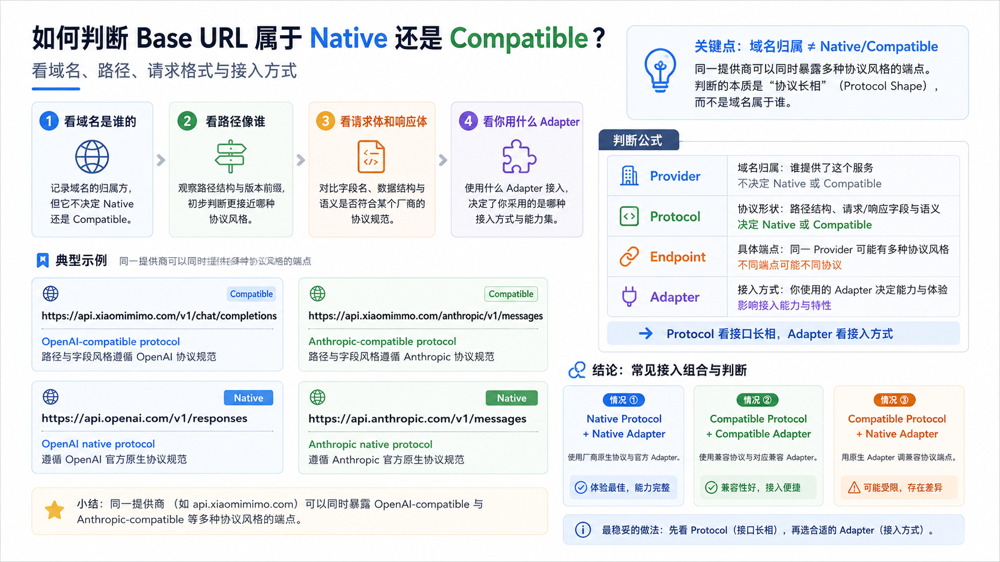
5. Native Provider Adapter 与 Compatible Provider Adapter
Native Provider Adapter
框架或 CLI 为某个厂商写专属适配器，处理模型、鉴权、流式、usage、tool_calls、reasoning 等差异。适合长期生产和深度能力接入。
Compatible Provider Adapter
通用适配器通过 baseURL、apiKey、headers、queryParams 等参数接入 OpenAI-compatible / Anthropic-compatible 服务。适合快速接入、迁移和多云切换。
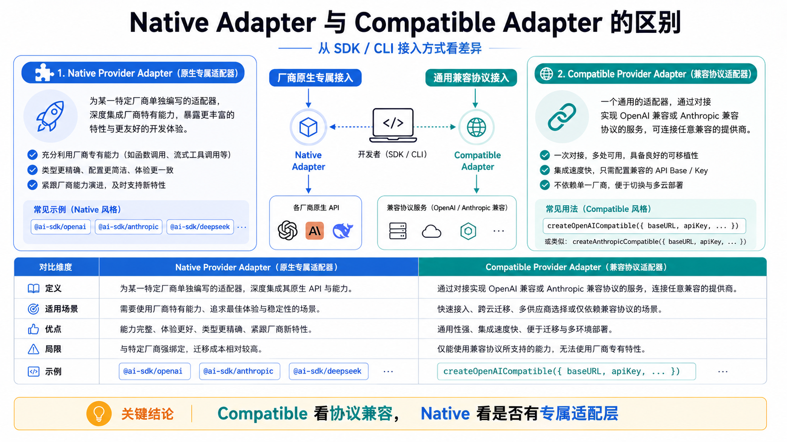
6. DeepSeek‑TUI 在做什么？
DeepSeek‑TUI 更准确地说是在做 Harness / Agent Runtime / TUI 层 的适配：它会理解 DeepSeek 的模型能力和接口字段，但它的产品重心不是重新定义协议，而是把模型调用接入上下文、工具、文件、终端、权限、日志和用户交互。
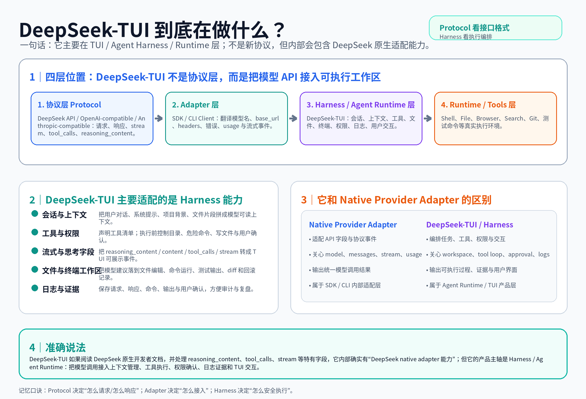
延伸图文教程：API 工具 CLI vs Agent 编码 CLI
如果你想区分 lark-cli、openai CLI、Codex CLI、Claude Code 的产品层级，请阅读 CLI 层级图文教程。
7. 小图补充：把常见误区拆开看
下面这些小图适合插入教程中间阅读：每张只回答一个问题，避免把 Provider、Protocol、Adapter、Harness 混在一起。
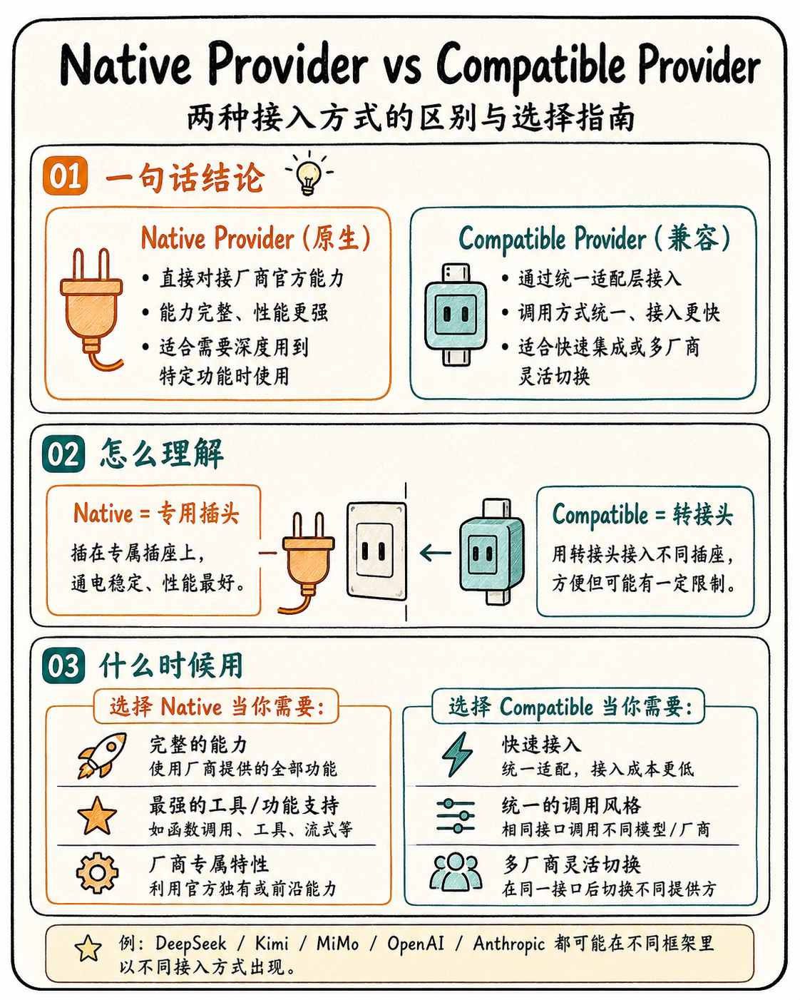
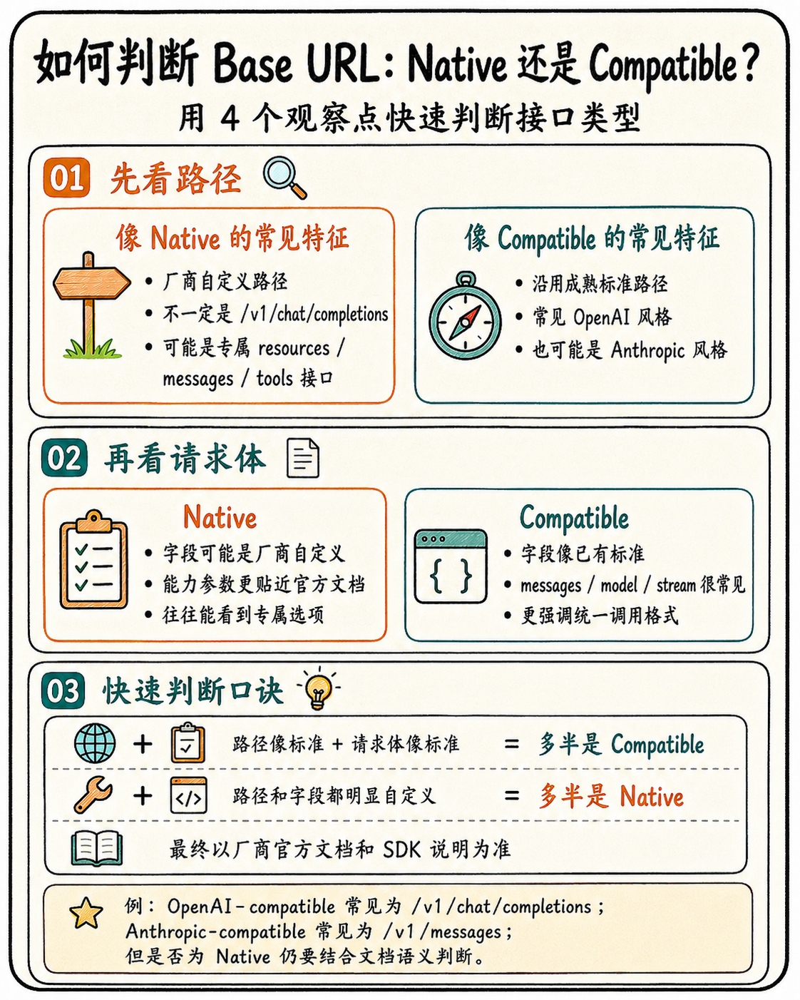
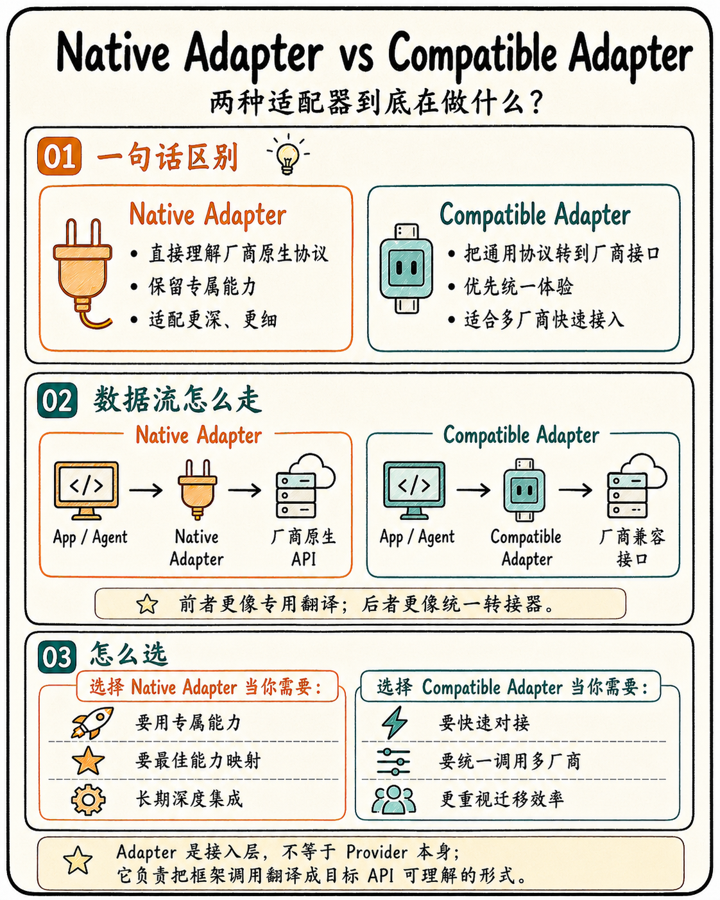
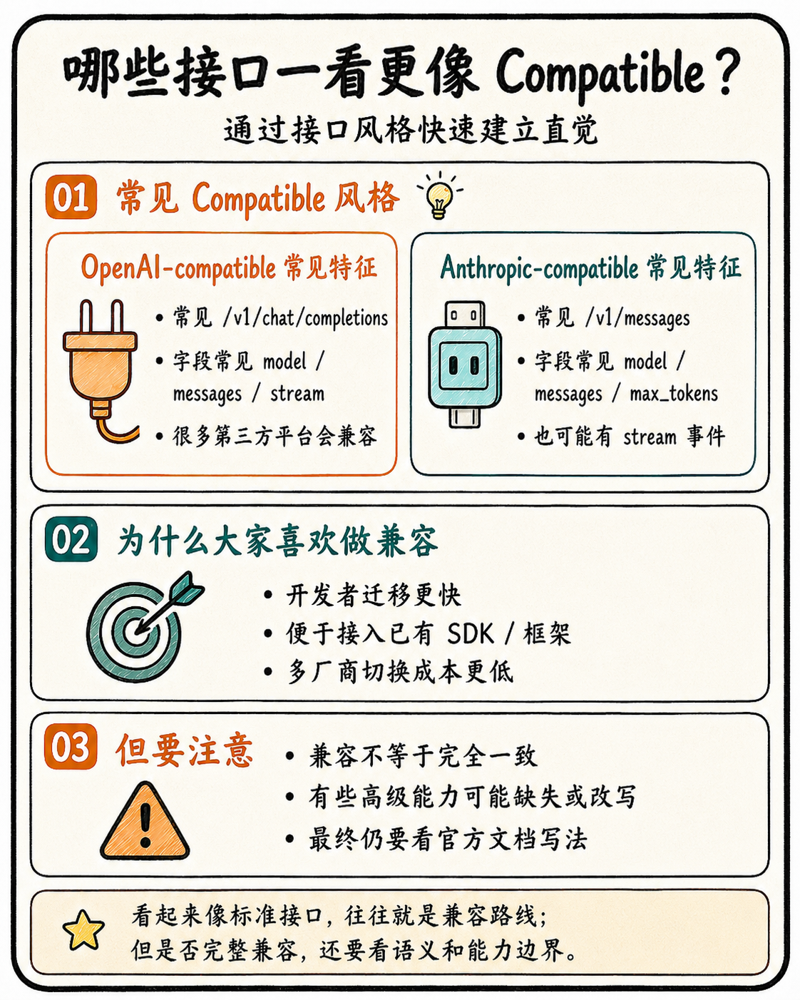
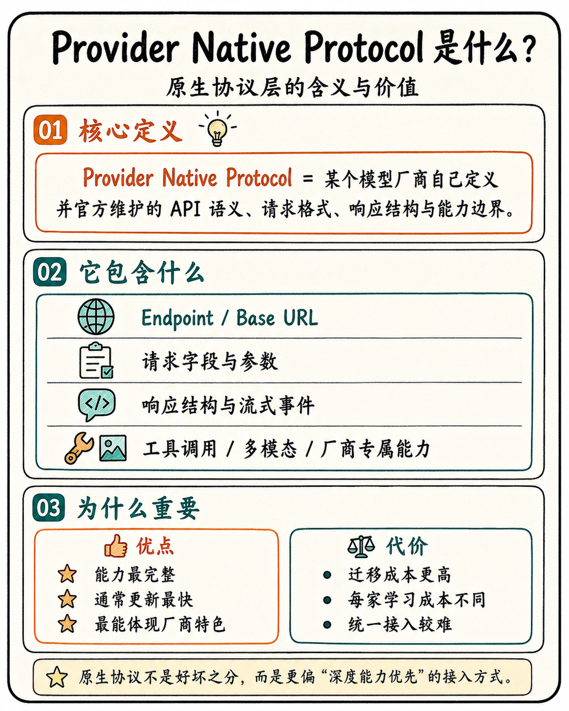